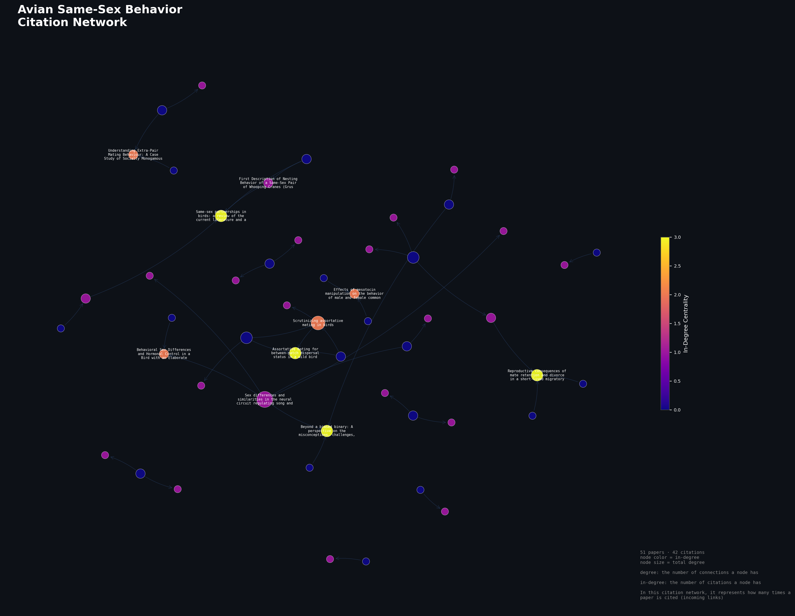
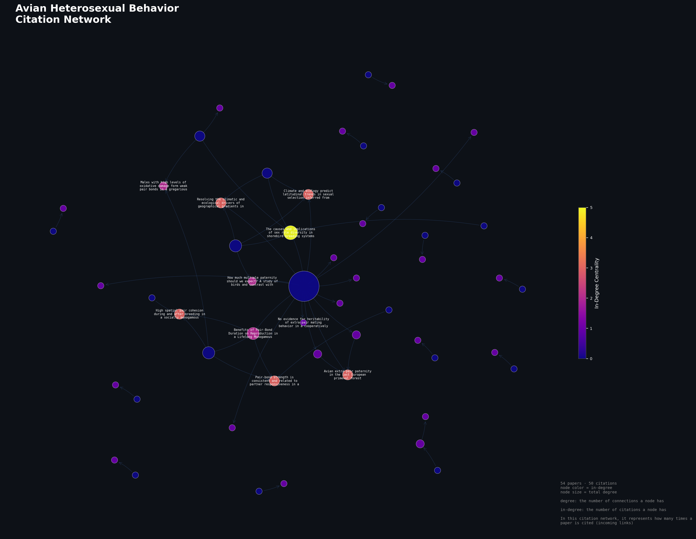

(C) Gerry Lynch, 2006. Little Gulls winter in a London park.
Do scientific papers describing same-sex behavior in birds cite fewer prior sources than papers describing heterosexual or reproductive behavior?
In comparison of same-sex behavior avian papers and hetereosexual behavior papers, there will be less edges for same-sex behavior papers due to the smaller amount of research. In other words, there is less of a foundation for same-sex avian research, so the papers will cite less in-network sources.
Papers were collected using the
Semantic Scholar API
, limited to publications in the Biology category from 2015 onwards, with
the queries below. Two separate datasets were built: one for avian
same-sex behavior and one for avian heterosexual behavior. Each dataset
was built independently, using distinct sets of search queries for each
group. For each search query, a maximum of 100 papers were retrieved from
the API. They were then filtered with specific keywords to make sure it
was relevant to the research. From there, the papers' citations were
collected through the same API and were filtered, to make sure they were
also relevant. If the citing paper existed in the dataset, it recorded
that connection as an edge between the reference and the citation. It drew
edges between papers that were already in the collected dataset. In other
words, it built a self-contained network rather than including citations
to papers outside of the network/dataset. These networks were then
visualized using NetworkX and
ForceAtlas2,
where node size reflects total degree (total number of citation links) and
node color reflects in-degree (number of times a source was cited within
the network).
See the code here.
Queries used to retrieve results:
same-sex behavior songbird, same-sex behavior avian,
homosexual behavior avian, homosexual behavior songbird,
same-sex mounting in birds, same-sex behavior bird,
bird same-sex parenting, homosexuality in birds,
homosexual bird mating, same‐sex partnerships in birds,
same-sex pair-bonds birdsheterosexual mating behavior birds, avian pair bond breeding,
bird reproductive behavior, avian monogamy breeding pairKeywords used to filter results:
same-sex, same sex, homosexual, homosexuality,
female-female, male-male, sexual behavior,
sexual behaviour, mating, pair bond, copulate,
courtship, mounting, pairing, sexual partner,
sex partner, reproductive behavior, reproductive behaviourheterosexual, heterosexuality, opposite-sex,
opposite sex, female-male, male-female, mixed-sex,
mating, pair bond, copulate, courtship, mounting,
pairing, sexual partner, sex partner, cross-sex,
breeding pair, breeding behavior, mate choice,
mate selection, monogamous, monogamy, nesting pair,
clutch, fertilization, reproductive behavior, reproductive behaviourbird, birds, avian, aves, songbird, passerine,
ornithology, finch, sparrow, warbler, thrush, starling,
crane, parrot, owl, duck, goose, flamingo, kestrel, corvid,
jay, wren, swift, macaw, dove, pigeon, raptor, seabird,
shorebird, waterfowl, budgerigar, canary, zebra finch,
quail, chicken, poultry| Same-sex | Heterosexual | ||
|---|---|---|---|
| Papers | 51 | 54 | |
| Citations | 42 | 50 | |
| Avg. publish year | 2021 | 2022 | |
| Network density | 0.0165 | 0.0175 | |
| Top-Cited Paper | Same‐sex partnerships in birds: a review of the current literature and a call for more data (3) | The causes and implications of sex role diversity in shorebird breeding systems (5) |

Use + and − to zoom, then drag to pan.

Use + and − to zoom, then drag to pan.
There are a few notable observations to take from this study:
Both networks were similarly sparse (42 vs 50 citations, 51 vs 54 papers). There were no statistically significant differences in density to support or refute the hypothesis. However, with this small of a data set, the qualitative data (as stated in the analysis) is more telling than the quanitative.
The quanitative data would be more telling if this study was scaled up to better encapsulate more source data. Another way to collect the same-sex avian studies would need to be constructed, instead of retrieving multiple different queries of data through the API. Perhaps there is an API that has a queer study category that can be used instead? Additionally, this study would require a significantly larger dataset, with a more broad publication date range, and metrics created to be sourced from all cited papers in a specific source, not just in-network ones.
With that said, current queer-ecology research portrays that same-sex behavior is systematically underresearched. Anderson et al. found that while 76.7% of researchers in a survey had observed same-sex behavior in their study species, fewer than half collected data on it, and most of those who did never published it (4). The idea of same-sex behavior as a rare "Darwinian paradox" has withstood despite widespread reporting across all major animal clades (Anderson et al. 2). Specifically in birds, same-sex partnerships persist many years, occur in sexually dimorphic species where mistaken identity is impossible, and serve a purpose past reproduction (Gillies and Siddiqi-Davies 2-6). These missing data sets in same-sex research reveal scientific biases that determine "who counts and who does not," setting heterosexual behavior as the default framework for understanding animal behavior (Livio and Sánchez-Querubín 1787).
Challenging the binary and deconstructing hetreonormative frameworks that have molded and persisted in what gets researched is vital in order to ensure an accurate and all-encompassing understanding of animal behavior. Nonhuman animal behavior has long been used to justify human identities and sexuality, and scientific data that excludes same-sex behavior frames queerness as unnatural. If more diverse and representative data is collected, it can aid in diminishing negative social perception of queer humans.
Anderson, Karyn A., et al. "Same-Sex Sexual Behaviour among Mammals Is Widely Observed, yet Seldomly Reported: Evidence from an Online Expert Survey." PLOS ONE, vol. 19, no. 6, June 2024, p. e0304885, https://doi.org/10.1371/journal.pone.0304885.
Gillies, Natasha, and Katrina Siddiqi-Davies. "Same-Sex Partnerships in Birds: A Review of the Current Literature and a Call for More Data." Journal of Avian Biology, vol. 2025, no. 3, 2025, p. e03452, https://doi.org/10.1002/jav.03452.
Livio, Maya, and Natalia Sánchez-Querubín. "Queer Ecological Data: Where Artificial Intelligence Meets the Avian." New Media & Society, vol. 28, no. 4, 2026, pp. 1773-91, https://go.exlibris.link/6V0nPH66.
Savulescu, Julian, et al. "Ethics of Genetic Research on Same-Sex Sexual Behaviour." Nature Human Behaviour, vol. 5, no. 9, Sept. 2021, pp. 1123-24, https://doi.org/10.1038/s41562-021-01164-y.
Brouwer, Lyanne, and Simon C. Griffith. "Extra-Pair Paternity in Birds." Molecular Ecology, vol. 28, no. 22, 2019, pp. 4864-82, https://doi.org/10.1111/mec.15259.
Brouwer and Griffith provide an overview of extra-pair paternity in birds. They summarize 500 studies over 300 species to determine mating outside the typical pair bond. This source was identified through the heterosexual citation network produced in this study; it is the dominant hub node due to its high number of outgoing citations to other papers in the data. In reflection, this makes sense as it is a large review article.